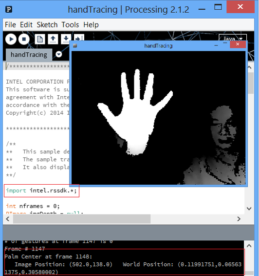

|
This sample $(RSSDK_DIR)/framework/Processing/FF_HandTracking shows how to use the SDK within the Processing framework. The sample is tested under Processing 2.1.2.
Use the following steps to run the sample:
| 1. | Copy the libraries directory to your sketch location. You can find your sketch location from File->Preference. To verify, relaunch Processing and go to sketch/import, you should see libpxcclr_processing in the sub-menu. |
| 2. | Click on the HandTracking/HandTracking.pde to launch the sample. |
| 3. | Click the playback button to run the sample. You should see something similar to Figure 160. |

Figure 160: The HandTracking Sample Window
|